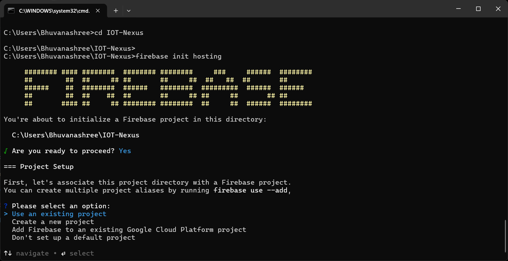
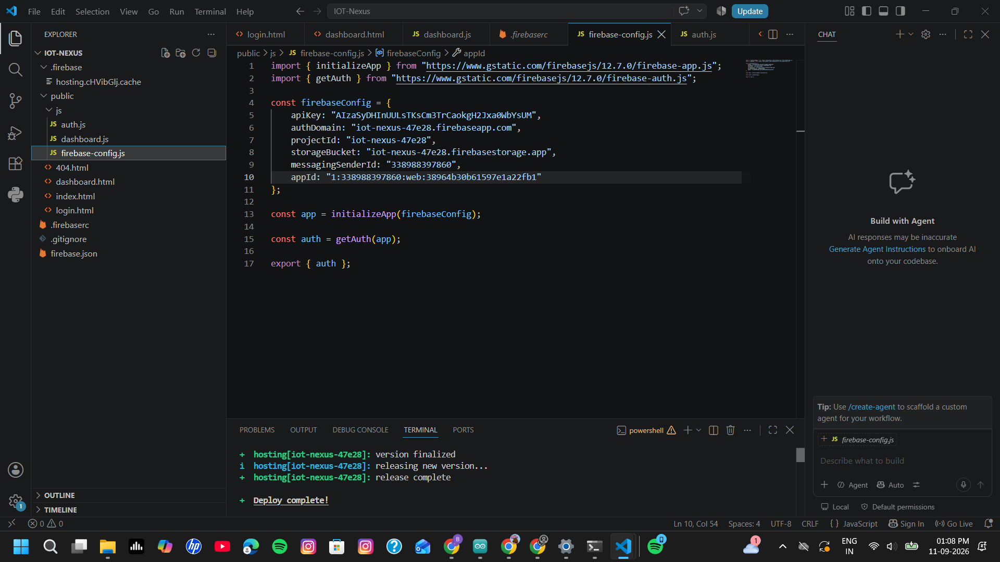
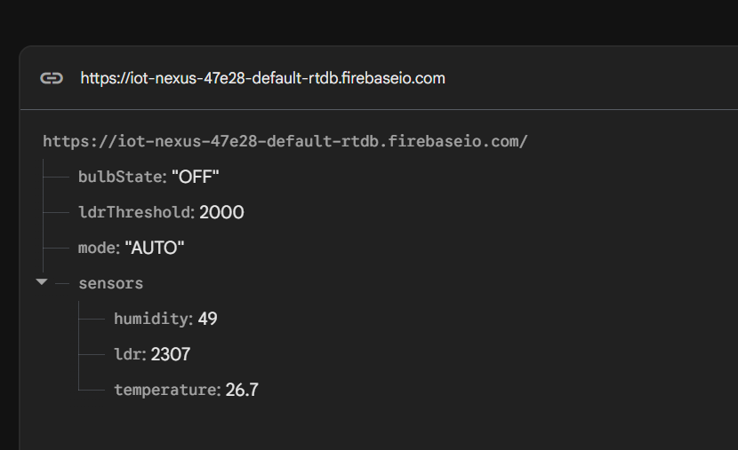
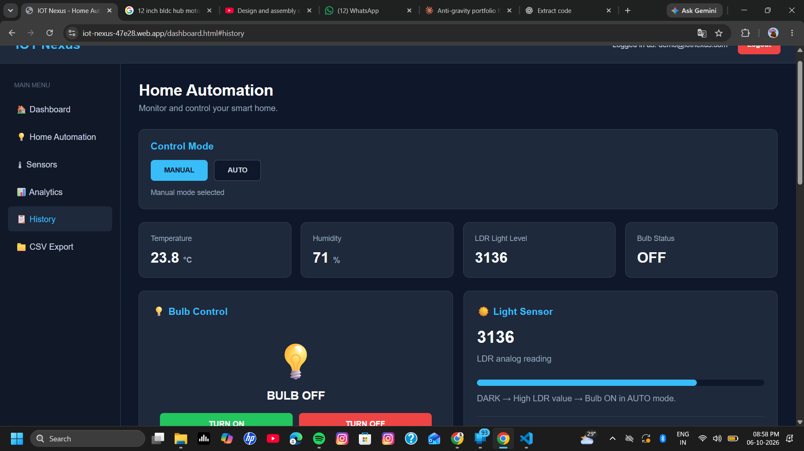

Project Overview
The objective of this assignment was to understand how Firebase can be used as a cloud platform for an IoT monitoring and control application.
I developed a web-based IoT application with a login interface and a protected dashboard. The dashboard was designed to display IoT information and provide control functions for the connected system.
Firebase Authentication was used for user authentication, while Firebase services were used as the cloud layer connecting the web application and IoT system.
Cloud & Firebase Concepts
Cloud Computing
Cloud computing allows applications and data to be accessed through Internet-based services rather than relying only on local resources.
BaaS
Backend as a Service provides ready-to-use backend capabilities such as authentication and databases for application development.
Firebase
Firebase provides cloud services that can be used to build web and IoT-related applications.
Authentication
Authentication verifies the identity of a user before allowing access to protected application features.
Authorization
Authorization determines what an authenticated user is allowed to access or perform.
Realtime Database
Firebase Realtime Database provides a cloud-based data storage mechanism that can be used by connected applications.
Firebase IoT Architecture
The IoT device communicates with the cloud layer, while the web application uses Firebase services to access the required information and provide the dashboard interface.
Tools Used
Hardware
- ESP32 development board
- IoT output / control hardware
- Sensor-based IoT setup
- Connecting wires
Software & Platforms
- Arduino IDE
- Visual Studio Code
- HTML
- CSS
- JavaScript
- Firebase
- Web browser
IoT & Firebase Setup
- I prepared the ESP32-based IoT setup and checked the required hardware connections.
- I created the Firebase project that would act as the cloud backend for the application.
- I configured the required Firebase services for the web application.
- I prepared the web application using Visual Studio Code.
- I connected the web application with Firebase.
- I created the authentication and dashboard workflow.
Web Application Development
- I created the web application structure using HTML, CSS and JavaScript.
- I designed the initial landing and login interface.
- I configured Firebase Email/Password Authentication for user login.
- I used authentication-state handling so that the dashboard could be protected from unauthenticated access.
- I created the dashboard interface for displaying IoT information and control options.
- I added logout functionality so that the user could leave the authenticated dashboard.
- I connected the application to Firebase cloud services.
- I tested the application through the browser.
Authentication & Dashboard Flow
The application first verifies the user's authentication status. After successful authentication, the dashboard becomes available for IoT monitoring and control.
Development & Dashboard Evidence




These images document the Firebase setup, web-application development, IoT Firebase configuration and monitoring-dashboard stages of the project.
Problems & Solutions
- Firebase configuration: The web application had to be correctly connected to the Firebase project before cloud features could be tested.
- Authentication: The login state had to be checked before displaying the protected dashboard.
- Frontend and backend connection: The web interface and Firebase services had to communicate correctly for the dashboard workflow to operate.
- Deployment: The web application was deployed so that the dashboard could be accessed through a live URL.
What I Learned
This assignment helped me understand how an IoT project can be extended from hardware control into a complete cloud-connected web application.
I learned how authentication can be used to protect a dashboard and how Firebase can provide backend services for a web application.
I also gained practical experience using Visual Studio Code to develop a web application and deploying it through Firebase Hosting.
Project Repository
This assignment page is maintained as part of my IoT Learning portfolio.
View Assignment on GitHub →Open Live Firebase Dashboard →